依照學習順序排列：先懂四柱，再認干支五行，接著十神與格局，最後練大運與專題。每一分類皆可用下拉選單篩選。
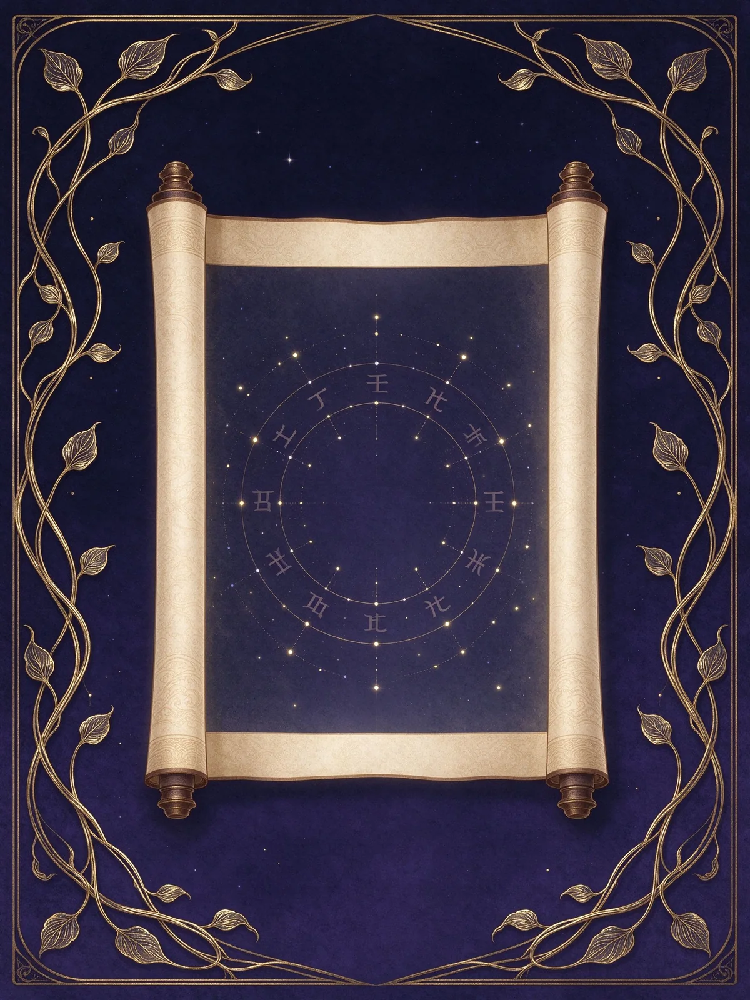
定義、四柱、源流，以及八字與紫微、西洋占星的差別，先把這套系統的邊界畫清楚。
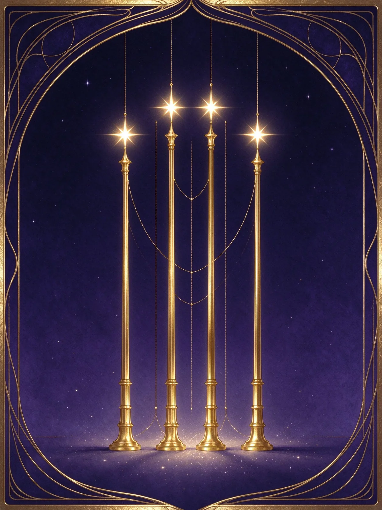
年柱、月柱、日柱、時柱各管什麼，地支裡還藏著哪些天干。
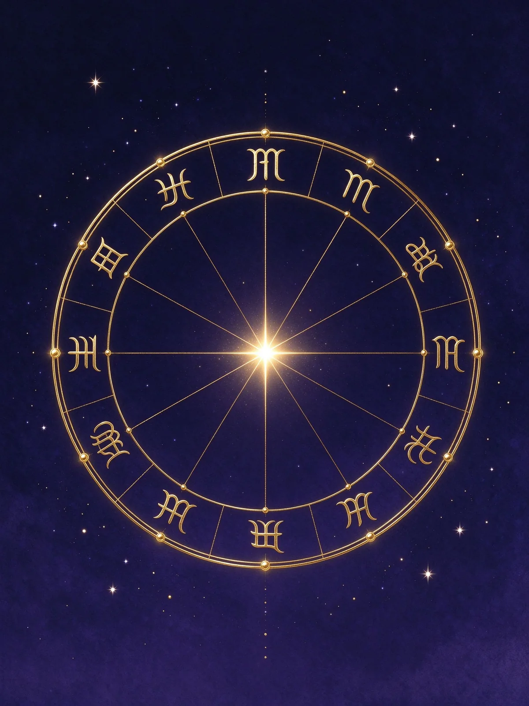
十干的五行陰陽、十二支的季節方位，以及六合、三合、沖刑害。
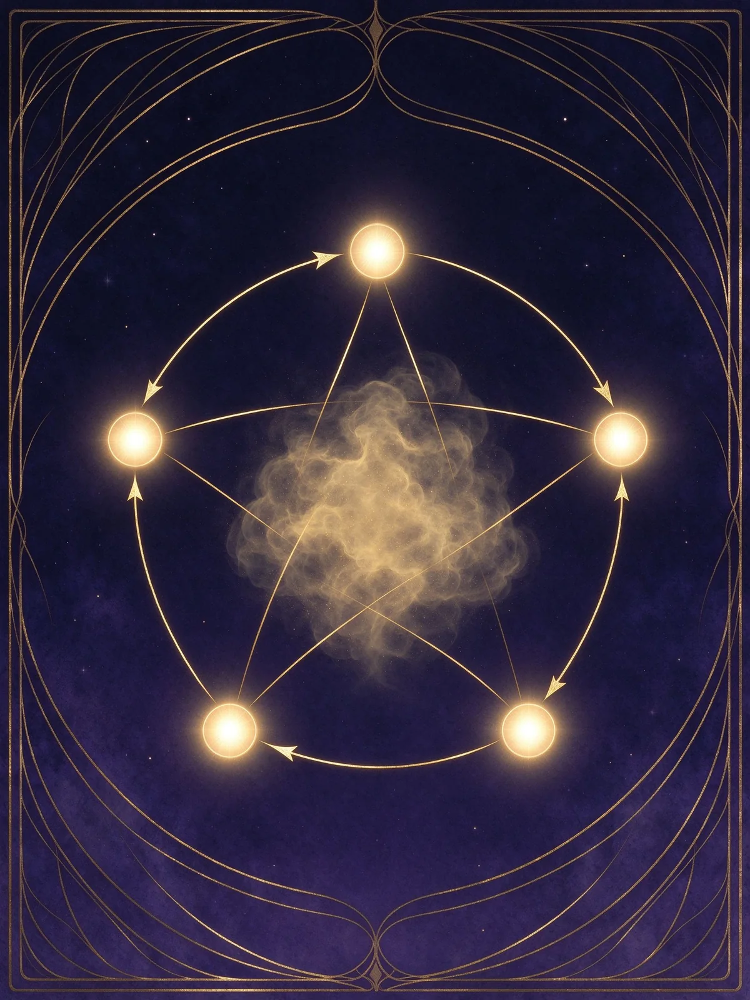
生剋決定關係、旺衰決定強弱，月令是判斷強弱的第一順位。
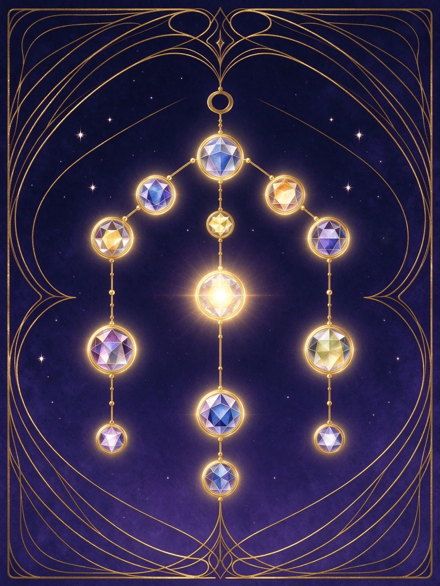
比劫、食傷、財星、官殺、印星，把五行生剋翻譯成人話的五組關係。
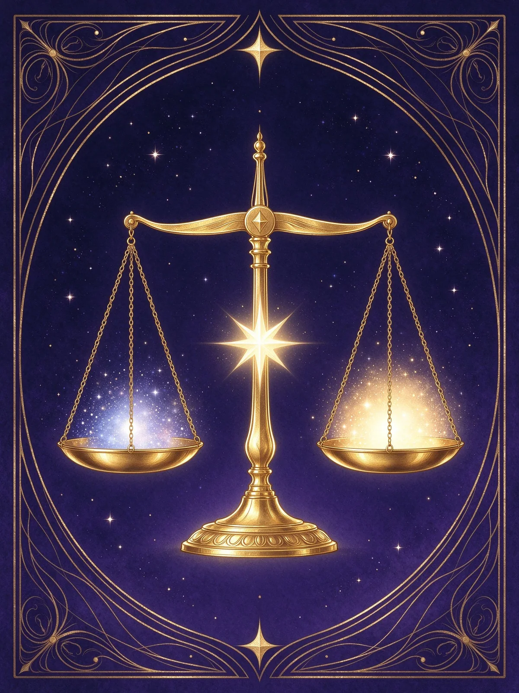
八格的成立條件、特殊格局與破格，以及扶抑、通關、調候三種取用。
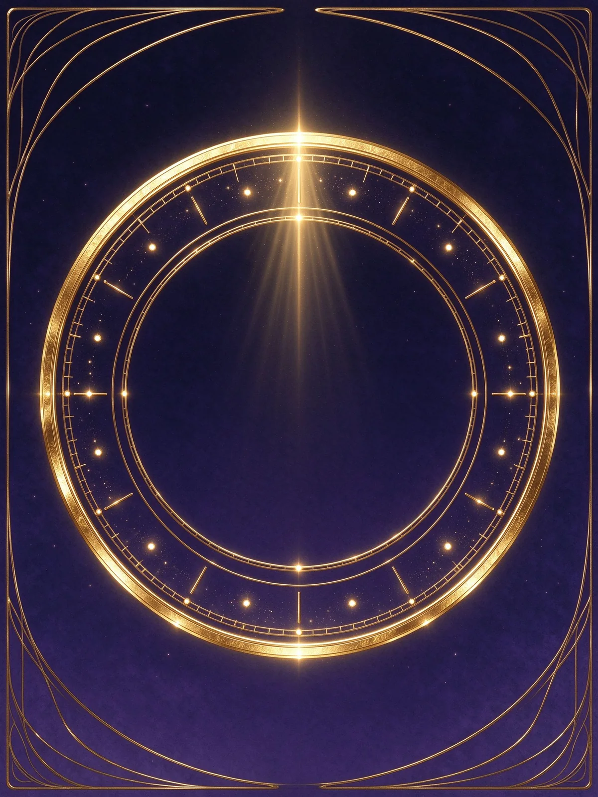
陽男陰女順行、三天折一年的起運換算，與大運流年的疊盤。
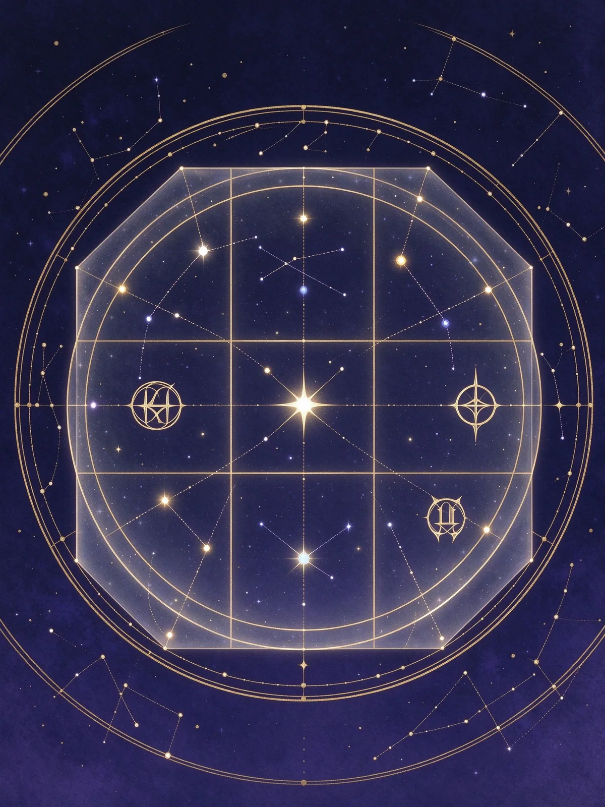
節氣換月、23 時換日、真太陽時校正與定盤驗證。
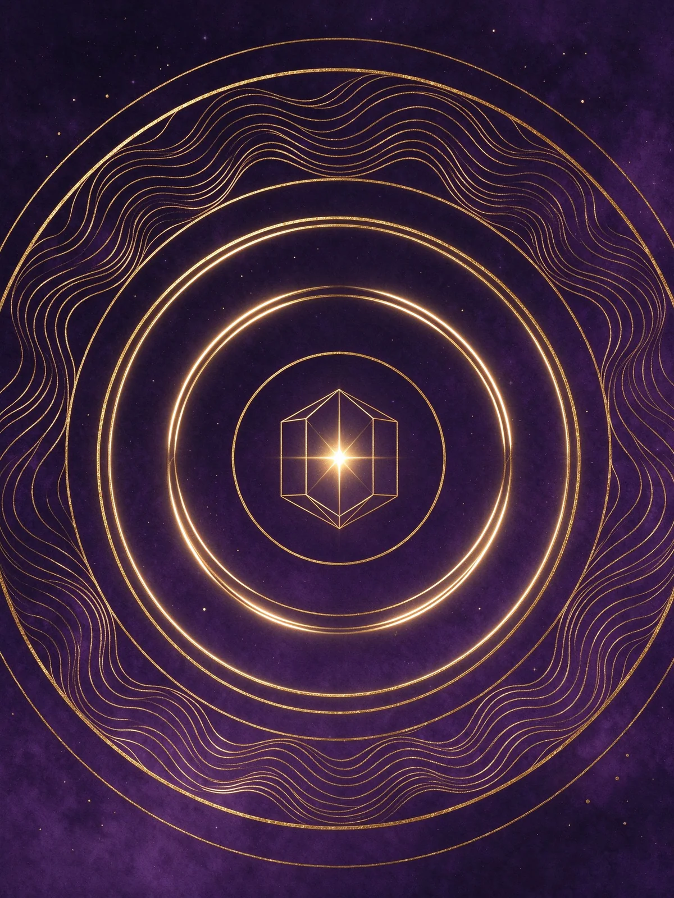
財運、事業、感情、健康——不同問題要看不同的十神與五行。
學完核心九類之後，這四區處理的是「十神逐一拆解、查表、看真實命例、解決實務疑問」。
四柱由左至右是年、月、日、時，每柱一個天干一個地支，地支下方再列藏干。下圖為示意，實際內容由生日與時辰決定。
年柱以立春換年，月柱以十二節換月；月柱同時是判斷旺衰的月令。
日干就是「你」，時柱由日干以五鼠遁推出；23 時之後算次日子時。
以日干為中心排十神、算旺衰強弱，再取用神，最後把大運與流年疊上去。
八字不難，難在順序。照這個路線走，大約三到六個月可以自己看完一張盤。
先搞清楚年、月、日、時四柱各代表什麼，以及天干地支的基本性質。這個階段不需要判斷強弱。
學會看得令、得地、得勢，知道同一個五行在春天和秋天力量差多少。
以日干為中心推出十神，理解每一組關係在講什麼。十神是後面所有判斷的詞彙表。
從月令取格，判斷這張盤的結構型態，再決定哪個五行是幫手。
把大運與流年疊上本命，觀察同一個五行在不同十年被放大或壓抑。
用當事人的實際事件回推，確認生辰與時辰是否正確。定盤不準，後面全部白算。
不想從頭學，也可以依照你現在想問的問題，直接看那一條線。
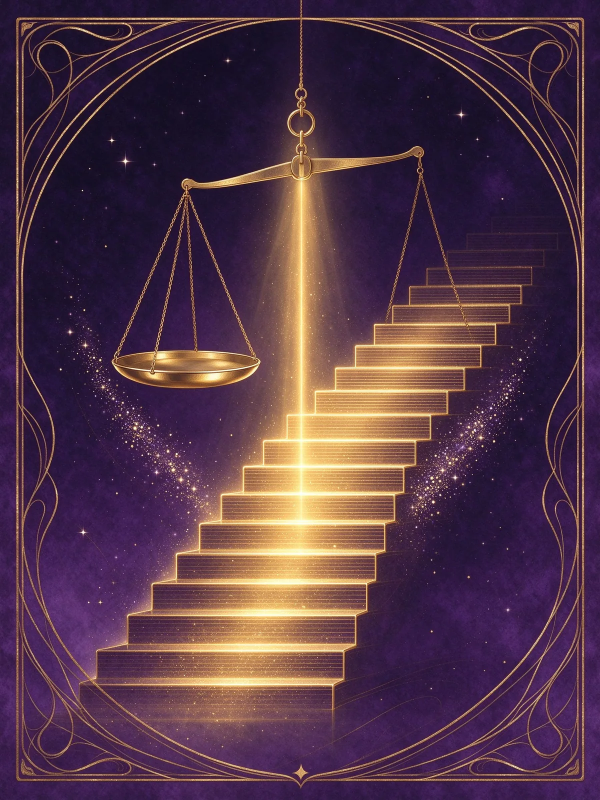
財星看收入方式與資源，官殺看職位與壓力，食傷看產出與表達。三者強弱決定適合的位置。
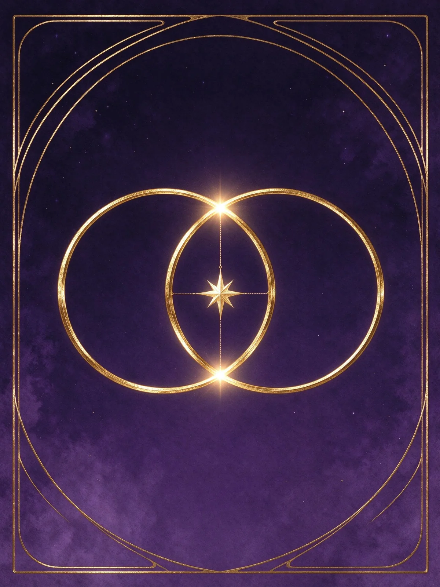
男看財星、女看官星，日支是伴侶宮；再看合沖與大運的引動，判斷關係的節奏。
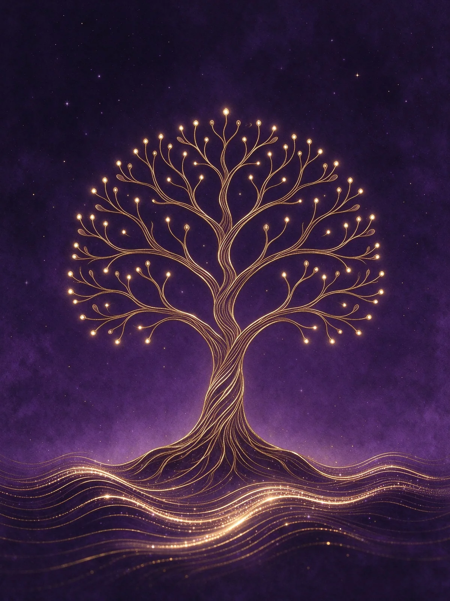
五行對應五臟，過旺與過弱都是訊號；情緒則看食傷與印星的比例。
同一個人生議題，不同系統會從不同角度觀照。